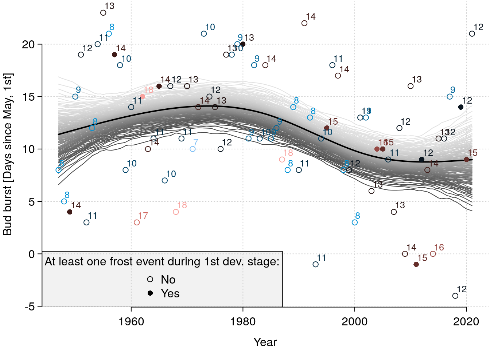

Introduction to R
Oktober 19, 2021 (Version 0.0.1)
About this course
This course introduces basic R-programming skills needed for applied statistical modeling in R.
All contents are licensed under CC BY-NC-ND 4.0.
Data
We will use two data-sets within this course.
Drought
Data basis: Fischer, R., Dobbertin, M., Granke, O., et al., 2006. The condition of forests in Europe. 2006 Executive report. UNECE, Hamburg.
bair <- c(.505, .648, .523, .426, .64, .5, .257, .866, .434, .368, .54, .923, .702,
.615, 1.013, .807, .262, .887, 1.281, 1.125, .99, 1.2, .983, .697, .606,
.718, .48, .822, .944, .77, 1.036, 1.23, .68, .985)
elev <- c(335, 460, 480, 515, 540, 650, 680, 715, 730, 835, 860, 960,
1020, 1025, 1100, 1150, 1150, 1170, 1190, 1350, 1400, 1500, 1540,
475, 480, 507.5, 580, 750, 780, 800, 1025, 1100, 1150, 1200)
species <- c("Spruce", "Spruce", "Spruce", "Spruce", "Spruce", "Spruce",
"Spruce", "Spruce", "Spruce", "Spruce", "Spruce", "Spruce", "Spruce",
"Spruce", "Spruce", "Spruce", "Spruce", "Spruce", "Spruce", "Spruce",
"Spruce", "Spruce", "Spruce", "Beech", "Beech", "Beech", "Beech",
"Beech", "Beech", "Beech", "Beech", "Beech", "Beech", "Beech")
drought <- data.frame(bair = bair,
elev = elev,
species = species)
summary(drought)## bair elev species
## Min. :0.2570 Min. : 335.0 Beech :11
## 1st Qu.:0.5272 1st Qu.: 597.5 Spruce:23
## Median :0.7100 Median : 847.5
## Mean :0.7489 Mean : 888.3
## 3rd Qu.:0.9732 3rd Qu.:1150.0
## Max. :1.2810 Max. :1540.0For further context information, another source working on and interpereting this data (p. 202-203):
Matthias Dobbertin, Markus Neumann, Hans-Werner Schroeck, Chapter 10 - Tree Growth Measurements in Long-Term Forest Monitoring in Europe, Editor(s): Marco Ferretti, Richard Fischer, Developments in Environmental Science, Elsevier, Volume 12, 2013, Pages 183-204, https://doi.org/10.1016/B978-0-08-098222-9.00010-8
Frost
Data basis: Deutscher Wetterdienst, values shown here were generated over individual values by myself.
Direct download links for data basis (Stations Id 1691, Goettingen):
Some definitions:
- Budburst is estimated based on first day with degree days > 220 (begin counting on March, 20).
- End of 1st development stage is estimated based on first day with degree days > 320 (begin counting on March, 20).
- Definition frost event: \(\min\left(\text{Temp}_{50\text{cm}}\right) < -1.95°\text{C}\)
frost <- data.frame(year = 1947:2021,
n_frost = c(0, 0, 2, 0, 0, 0, 0, 0, 0, 0, 2, 0, 0, 0, 0, 1,
0, 0, 2, 0, 0, 0, 0, 0, 0, 0, 0, 0, 0, 0, 0, 0,
0, 1, 0, 0, 0, 0, 0, 0, 0, 0, 0, 0, 0, 0, 0, 0,
2, 0, 0, 0, 0, 0, 0, 0, 0, 1, 2, 0, 0, 0, 0, 0,
3, 2, 0, 0, 0, 0, 0, 0, 1, 5, 0),
bud_burst = as.Date(c(-19230, -18867, -18503, -18127, -17758, -17408, -17034,
-16661, -16293, -15929, -15566, -15202, -14847, -14475,
-14121, -13744, -13384, -13017, -12647, -12291, -11917,
-11563, -11191, -10821, -10462, -10092, -9720, -9361,
-8997, -8635, -8261, -7896, -7530, -7164, -6808, -6436,
-6078, -5705, -5347, -4981, -4619, -4254, -3883, -3524,
-3145, -2788, -2437, -2060, -1694, -1322, -958, -602,
-237, 124, 499, 864, 1222, 1592, 1957, 2321, 2681, 3055,
3408, 3789, 4137, 4513, 4877, 5234, 5610, 5976, 6345,
6691, 7074, 7435, 7812),
origin = as.Date("2000-01-01")),
end_1st_dev_stage = as.Date(c(-19222, -18859, -18489, -18118, -17746, -17397,
-17026, -16650, -16280, -15921, -15552, -15192,
-14837, -14464, -14104, -13726, -13370, -13006,
-12633, -12281, -11905, -11545, -11180, -10808,
-10455, -10078, -9710, -9349, -8984, -8623, -8248,
-7886, -7521, -7151, -6799, -6427, -6068, -5691,
-5338, -4972, -4601, -4246, -3875, -3513, -3131,
-2780, -2426, -2050, -1679, -1311, -944, -594,
-225, 132, 510, 873, 1235, 1608, 1972, 2332, 2694,
3067, 3422, 3802, 4152, 4525, 4891, 5250, 5623,
5988, 6354, 6703, 7086, 7450, 7824),
origin = as.Date("2000-01-01")))
frost$may1st <- as.Date(paste0(frost$year, "-05-01"))
frost$bud_burst_days_since_may1st <- julian(frost$bud_burst, origin = as.Date("2000-01-01")) -
julian(frost$may1st, origin = as.Date("2000-01-01"))
frost$end_1st_dev_stage_days_since_may1st <- julian(frost$end_1st_dev_stage,
origin = as.Date("2000-01-01")) -
julian(frost$may1st, origin = as.Date("2000-01-01"))
summary(frost)## year n_frost bud_burst end_1st_dev_stage
## Min. :1947 Min. :0.00 Min. :1947-05-09 Min. :1947-05-17
## 1st Qu.:1966 1st Qu.:0.00 1st Qu.:1965-11-11 1st Qu.:1965-11-23
## Median :1984 Median :0.00 Median :1984-05-19 Median :1984-06-02
## Mean :1984 Mean :0.32 Mean :1984-05-12 Mean :1984-05-24
## 3rd Qu.:2002 3rd Qu.:0.00 3rd Qu.:2002-11-09 3rd Qu.:2002-11-20
## Max. :2021 Max. :5.00 Max. :2021-05-22 Max. :2021-06-03
## may1st bud_burst_days_since_may1st
## Min. :1947-05-01 Min. :-4.00
## 1st Qu.:1965-10-30 1st Qu.: 8.00
## Median :1984-05-01 Median :11.00
## Mean :1984-04-30 Mean :11.69
## 3rd Qu.:2002-10-30 3rd Qu.:16.00
## Max. :2021-05-01 Max. :23.00
## end_1st_dev_stage_days_since_may1st
## Min. : 8.00
## 1st Qu.:20.00
## Median :24.00
## Mean :23.47
## 3rd Qu.:28.50
## Max. :36.001 (Int)R(o)
1.1 What is R?
‘A Language for Data Analysis and Graphics’
An example: Scatter plot, data-management and descriptive analysis
## A scatter-plot:
paint <- colorspace::qualitative_hcl(n = 2)
par(mar = c(3, 3, .1, .1), mgp = c(2, .5, 0), tcl = -.3)
plot(drought$elev, drought$bair, las = 1, bty = "n",
xlab = "Elevation [m]", ylab = "Basal area increment ratio [%]",
pch = c(16, 17)[1 + (drought$species == "Spruce")],
col = paint[1 + (drought$species == "Spruce")])
abline(h = 1, lty = 2)
abline(v = 1000, lty = 3)
legend("topleft", pch = c(16, 17), col = paint, legend = c("Beech", "Spruce"),
bg = "white", bty = "n")
## [1] 335 1540## [1] 1 6br <- seq(tmp[1] * 250, (tmp[2] + 1) * 250, by = 250)
(drought$elev_cut <- cut(drought$elev, breaks = br))## [1] (250,500] (250,500] (250,500] (500,750]
## [5] (500,750] (500,750] (500,750] (500,750]
## [9] (500,750] (750,1e+03] (750,1e+03] (750,1e+03]
## [13] (1e+03,1.25e+03] (1e+03,1.25e+03] (1e+03,1.25e+03] (1e+03,1.25e+03]
## [17] (1e+03,1.25e+03] (1e+03,1.25e+03] (1e+03,1.25e+03] (1.25e+03,1.5e+03]
## [21] (1.25e+03,1.5e+03] (1.25e+03,1.5e+03] (1.5e+03,1.75e+03] (250,500]
## [25] (250,500] (500,750] (500,750] (500,750]
## [29] (750,1e+03] (750,1e+03] (1e+03,1.25e+03] (1e+03,1.25e+03]
## [33] (1e+03,1.25e+03] (1e+03,1.25e+03]
## 6 Levels: (250,500] (500,750] (750,1e+03] ... (1.5e+03,1.75e+03]## ... and some descriptive statistics:
library("plyr")
ddply(.data = drought, .variables = c("species", "elev_cut"), summarize, .drop = F,
n = length(bair),
mean_bair = mean(bair))## species elev_cut n mean_bair
## 1 Beech (250,500] 2 0.6515000
## 2 Beech (500,750] 3 0.6733333
## 3 Beech (750,1e+03] 2 0.8570000
## 4 Beech (1e+03,1.25e+03] 4 0.9827500
## 5 Beech (1.25e+03,1.5e+03] 0 NaN
## 6 Beech (1.5e+03,1.75e+03] 0 NaN
## 7 Spruce (250,500] 3 0.5586667
## 8 Spruce (500,750] 6 0.5205000
## 9 Spruce (750,1e+03] 3 0.6103333
## 10 Spruce (1e+03,1.25e+03] 7 0.7952857
## 11 Spruce (1.25e+03,1.5e+03] 3 1.1050000
## 12 Spruce (1.5e+03,1.75e+03] 1 0.98300001.2 Why useR?
Because of packages such as ‘mgcv’! … and because we can organize our whole working-with-data-process reproducibly (markdown!) in one place!
(Note: the following figure is much too overloaded!)
par(mar = c(3, 3, .1, .1), mgp = c(2, .5, 0), tcl = -.3)
plot(frost$year, frost$bud_burst_days_since_may1st, type = "n",
xlab = "Year", ylab = "Bud burst [Days since May, 1st]",
las = 1, bty = "n")
grid()
legend("bottomleft", pch = c(1, 16), legend = c("No", "Yes"),
title = "At least one frost event during 1st dev. stage:",
bg = rgb(.5, .5, .5, alpha = .1))
## library("mgcv")
m <- mgcv::gam(bud_burst_days_since_may1st ~ te(year), data = frost)
nd <- data.frame(year = seq(min(frost$year), max(frost$year), by = .5))
br <- mgcv::gam.mh(m, thin = 5, ns = 2000, rw.scale = 2)$bs
coda::effectiveSize(coda::as.mcmc(br))
Mu <- predict(m, newdata = nd, type = "lpmatrix") %*% t(br)
Mu_q <- apply(X = Mu, MAR = 1 , FUN = quantile,
probs = seq(.01, .99, by = .01))
paint <- colorspace::sequential_hcl(n = nrow(Mu_q), pal = "Light Grays")
for (i in 1:nrow(Mu_q)) {
lines(nd$year, Mu_q[i, ], col = paint[i])
}
lines(nd$year, predict(m, newdata = nd), lwd = 2)
tmp <- as.numeric(frost$end_1st_dev_stage - frost$bud_burst)
tmp <- tmp - min(tmp) + 1
paint <- colorspace::diverging_hcl(n = max(tmp), pal = "Berlin")
points(frost$year, frost$bud_burst_days_since_may1st, col = paint[tmp],
pch = c(1, 16)[1 + (frost$n_frost > .5)])
text(frost$year, frost$bud_burst - frost$may1st,
labels = frost$end_1st_dev_stage - frost$bud_burst,
adj = c(-.1, -.5), cex = .8, col = paint[tmp])
1.3 Literature
1.3.1 Books…
- Everitt, Hothorn (2006): A Handbook of Statistical Analyses using R. Chapman and Hall.
- Ligges (2008): Programmieren mit R. Springer Verlag.
- Venables, Smith (2002): An introduction to R. Network Theory Verlag.
- Verzani (2005): Using R for Introductory Statistics. Chapman and Hall.
- Wickham (2016): Advanced R.
1.3.2 … and the wide web:
1.4 R and RStudio
R:
- https://r-project.org
- Freely availble
- Unterstützt durch alle Betriebssysteme: Windows, Linux/Unix, Mac OS, …
RStudio and others editors for working with R:
- RStudio for Windows, Mac OS and Linux:
- RStudio website
- RStudio cheat sheet
- Previously, I presented a list of alternatives to RStudio, but in 2021, that doesn’t seem suitable anymore!?
1.5 R is a language
‘To understand computations in R, two slogans are helpful: Everything that exists is an object. Everything that happens is a function call.’ (John M. Chambers)
- Interpreted language: R interprets and evaluates your function calls without a compilation step.
Simple syntax with clear similarities to mathematical notation.
1.6 R is an environment for statistical computing
- rich toolbox for doing (graphical) statistics with an ever growing list of ever improving ‘add-on’ packages.
- R is freely available for anyone.
- R code is the product: it is transparent and allows you to reproduce any single step of your analysis.
1.7 A short history of R
- 1976: Development of programming language S at Bell Laboratories
- 1988: Software S-PLUS released (for purchase)
- 1992: Ross Ihaka and Robert Gentleman start project R
- 1995: R available for free under GPL
- 1998: Comprehensive R archive network (CRAN) is founded
- 2000: First ‘complete’ version R-1.0.0 released
- 2004: First conference on R (useR!) takes place
- 2021: Current version is R-4.1.2 (November 2021)
2 Basic mathematical commands
| Mathematical operation | Command |
|---|---|
| Addition | + |
| Subtraction | - |
| Multiplication | * |
| Division | \ |
| Exponentiation | ^ |
| Rest of integer division (Modulo) | %% |
| Integer division | %\% |
| Brackets | () |
2.1 Exercise
Run the following lines.
a <- drought$bair[1] ## Basal area increment ratio at 1st plot
a ## ... growth is about a half in 2003 in comparison to growth in 2002## [1] 0.505b <- drought$bair[2] ## Basal area increment ratio at 2nd plot
b ## ... growth is about two thirds in 2003 in comparison to growth in 2002## [1] 0.648## [1] -0.143## [1] 0.779321## [1] 1## [1] 0.143## [1] 0.5765Did we just calculate an arithmetic mean ‘by hand’?
## [1] 0.57653 Symbols and values
| Objective | Call |
|---|---|
| Decimal sign | . |
| List and seperate objects, arguments, … | , |
| Several R-calls in one line (not recommended) | ; |
| ‘from-to’ operator for integer sequences | : |
| Comments and help | #, ? |
| Number \(\pi\) | pi |
| A concept called infinity | Inf |
| Base 10 exponential notation (eg. \(10^{-3}=0.001\)) | 1e-3 |
| Integer value | L |
| Empty object | NULL |
| Missing value (not available) | NA |
| Non-defined value (not a number) | NaN |
| Comparison | >, >=, ==, !=, <=, < |
| Boolean | TRUE, T, FALSE, F |
| Negation (not) | ! |
| Conjunction (and) | & |
| Disjunction (or) | | |
Remember, everything in R is an object or a function, so we even can’t use , without a function cal such as:
## [1] 0.505 0.6483.1 Exercise
Run the following lines and ask yourself What is the applied question behind each line?.
4 Mathematical functions
| Mathematical function | Call |
|---|---|
| Exponential function with basis \(e\) | exp() |
| Natural logarithm | log() |
| Square root | sqrt() |
| Absolute value | abs() |
| Trigonometric functions | sin(), cos(), tan() |
| Sum and product | sum(), prod() |
| Round (up and down) | round() (floor(), ceiling()) |
| Maximum and minimum value | max(), min() |
| Factorial \(n! = 1\cdot 2\cdot 3\cdot\ldots\cdot n\) | factorial() |
| Binomial coefficient \(n \choose k\) | choose() |
… for further functions, see ?Special and ?groupGeneric.
4.1 Exercise
Run the following lines.
a <- d$h[1]; a; b <- d$h[2]; b ## Hoehen erster und zweiter Baum
exp(x = a)
sqrt(x = a)
a - b
abs(x = a - b)(Computers construct real values)[https://en.wikipedia.org/wiki/Floating-point_arithmetic]:
## [1] 1.224647e-16## [1] 0## [1] -15 Functions basics
(We will have a more detailed focus on functions in the third(?) session.)
Basic properties of functions in R:
- Function call of function
fusing brackets:f() - Documentation (‘help-page’) using preceded question mark (
?f), or callinghelp(f) - Search for documentation of
fby:help.search('f') - Syntax:
- Arguments often have default objects, eg. for
pchinplot():
- Giving objects to arguments is not optional in any case:
## [1] 1## [1] 1## Error in plot.xy(xy, type, ...): ungültiger Plottyp6 Documentation
Structure:
- Description: In brief, what is this function about?
- Usage: How to call the function? What are mandatory arguments?
- Arguments: Explaining each argument
- Details: Some text about implementation, scope, …
- Value: Explaining the resulting object
- Authors and References and See also and …
- Examples: Always at the bottom, always scroll down there, you will never be disappointed!
6.1 Exercises
Go to the documentation for lm.
- What is this function about?
- Copy-paste and run the example.
7 Objects
Basic Conventions:
- Objects store values, results or algorithms, ie. functions.
- Assignment of contents by
<-or=(or very seldomly->). - Type of contents is described by object classes.
## [1] "bair" "elev" "species" "elev_cut"7.1 Objekt names
There are few hard technical restrictions on how to name objects in R, and a few soft rules that make life much simpler:
- Object names are requared to begin with a lower or upper case letter, no numbers or any other signs are allowed.
- As a second or any trailing character, numbers and some signs (restrict yourself to underscore
_and.) are allowed - Don’t use
?,$,%,^,&,*,(,),-,#,?,,,<,>,/,|,\,[,],{, and@ - As short as possible, as long as needed!
- This trade-off is simple, but (hopefully) still very useful: long object names mean more typing (RStudio weakens this point by auto-complete), but leave less room for questions on content (What was
aagain?). - So try to give ‘telling names’, ie. contents (and units!) should be clearly visible from the object’s name:
first_bair_measurementis better thana,elev_mis better thanelev. - Ask yourself: Will I be able to immediately remember the contents from the name after two weeks without working on this project?
We get an error message:
## Error: <text>:1:2: unerwartetes Symbol
## 1: 3values
## ^7.2 Save and load
7.3 Litter service
- Names of objects in current session:
ls() - Litter service using
rm() dput()comes as a helper
## [1] "a" "b" "bair"
## [4] "br" "d" "d_breaks_cut"
## [7] "dd" "drought" "elev"
## [10] "frost" "i" "m"
## [13] "Mu" "Mu_q" "nd"
## [16] "paint" "quantile_sequence" "species"
## [19] "three_values" "tmp"## c("a", "b", "bair", "br", "d", "d_breaks_cut", "dd", "drought",
## "elev", "frost", "i", "m", "Mu", "Mu_q", "nd", "paint", "quantile_sequence",
## "species", "three_values", "tmp")## c("bair", "br", "d", "d_breaks_cut", "dd", "elev", "i", "m",
## "Mu", "Mu_q", "nd", "paint", "quantile_sequence", "species",
## "three_values", "tmp")rm("bair", "br", "d", "d_breaks_cut", "dd", "elev", "i", "m", "Mu",
"Mu_q", "nd", "paint", "quantile_sequence", "species", "three_values", "tmp")
ls()## [1] "a" "b" "drought" "frost"8 Dataobject classes
8.1 Vector
A vector is a one-dimensional combination of single-element objects of the same class.
8.1.1 Basics
| Objective | Call |
|---|---|
| Combination of elements | c(A, B) |
| Indexing | c(A, B)[1] |
| Length of vector | length(x) |
| Integer sequence | A:B |
| Flexible sequence | seq(A, B, length = N), seq(A, B, by = K) |
| Repeat | rep(A, times = N), rep(c(A, B), each = K) |
| Sort elements | sort(c(A, B), decreasing = FALSE) |
| Order of elements | order(c(A, B)) |
8.1.2 Exercises
Copy-paste and run each line: describe what it does and what it results in.
## [1] 335 460## [1] 335 460 335## [1] 335 460 335 460## [1] 335 480## [1] 2## [1] 335 336 337 338 339 340 341 342 343 344 345 346 347 348 349 350 351 352
## [19] 353 354 355 356 357 358 359 360 361 362 363 364 365 366 367 368 369 370
## [37] 371 372 373 374 375 376 377 378 379 380 381 382 383 384 385 386 387 388
## [55] 389 390 391 392 393 394 395 396 397 398 399 400 401 402 403 404 405 406
## [73] 407 408 409 410 411 412 413 414 415 416 417 418 419 420 421 422 423 424
## [91] 425 426 427 428 429 430 431 432 433 434 435 436 437 438 439 440 441 442
## [109] 443 444 445 446 447 448 449 450 451 452 453 454 455 456 457 458 459 460## [1] 335.0 335.5 336.0 336.5 337.0 337.5 338.0 338.5 339.0 339.5 340.0 340.5
## [13] 341.0 341.5 342.0 342.5 343.0 343.5 344.0 344.5 345.0 345.5 346.0 346.5
## [25] 347.0 347.5 348.0 348.5 349.0 349.5 350.0 350.5 351.0 351.5 352.0 352.5
## [37] 353.0 353.5 354.0 354.5 355.0 355.5 356.0 356.5 357.0 357.5 358.0 358.5
## [49] 359.0 359.5 360.0 360.5 361.0 361.5 362.0 362.5 363.0 363.5 364.0 364.5
## [61] 365.0 365.5 366.0 366.5 367.0 367.5 368.0 368.5 369.0 369.5 370.0 370.5
## [73] 371.0 371.5 372.0 372.5 373.0 373.5 374.0 374.5 375.0 375.5 376.0 376.5
## [85] 377.0 377.5 378.0 378.5 379.0 379.5 380.0 380.5 381.0 381.5 382.0 382.5
## [97] 383.0 383.5 384.0 384.5 385.0 385.5 386.0 386.5 387.0 387.5 388.0 388.5
## [109] 389.0 389.5 390.0 390.5 391.0 391.5 392.0 392.5 393.0 393.5 394.0 394.5
## [121] 395.0 395.5 396.0 396.5 397.0 397.5 398.0 398.5 399.0 399.5 400.0 400.5
## [133] 401.0 401.5 402.0 402.5 403.0 403.5 404.0 404.5 405.0 405.5 406.0 406.5
## [145] 407.0 407.5 408.0 408.5 409.0 409.5 410.0 410.5 411.0 411.5 412.0 412.5
## [157] 413.0 413.5 414.0 414.5 415.0 415.5 416.0 416.5 417.0 417.5 418.0 418.5
## [169] 419.0 419.5 420.0 420.5 421.0 421.5 422.0 422.5 423.0 423.5 424.0 424.5
## [181] 425.0 425.5 426.0 426.5 427.0 427.5 428.0 428.5 429.0 429.5 430.0 430.5
## [193] 431.0 431.5 432.0 432.5 433.0 433.5 434.0 434.5 435.0 435.5 436.0 436.5
## [205] 437.0 437.5 438.0 438.5 439.0 439.5 440.0 440.5 441.0 441.5 442.0 442.5
## [217] 443.0 443.5 444.0 444.5 445.0 445.5 446.0 446.5 447.0 447.5 448.0 448.5
## [229] 449.0 449.5 450.0 450.5 451.0 451.5 452.0 452.5 453.0 453.5 454.0 454.5
## [241] 455.0 455.5 456.0 456.5 457.0 457.5 458.0 458.5 459.0 459.5 460.0## [1] 335 340 345 350 355 360 365 370 375 380 385 390 395 400 405 410 415 420 425
## [20] 430 435 440 445 450 455 460## [1] 335.0000 348.8889 362.7778 376.6667 390.5556 404.4444 418.3333 432.2222
## [9] 446.1111 460.0000## [1] 335 480 335 480 335 480## [1] 335 335 335 480 480 480## [1] 335 480 335 480 335 480 335## [1] 480 335## [1] 3 1 2## [1] "Spruce" "Spruce"## [1] "Spruce" "Spruce" "Beech"## [1] "Spruce" "Spruce" "2"8.2 Calculations
- Grundlegende Berechnungen operieren unabhängig auf allen Elementen
- Funktionsaufrufe arbeiten (in der Regel) mit vektorisierten Argumenten
- Summary des Inhalts:
summary() - Häufigkeitstabelle:
table()
8.2.1 Exercises
Copy-paste and run each line: describe what it does and what it results in.
8.3 Matrix
A vector is a two-dimensional combination of single-element objects of the same class.
8.3.1 Basics
P\(\times\)P matrix with content content:
Fill matrix column- (default) or linewise using argument byrow = TRUE:
- Indexing of one element:
A[1, 1] - Indexing of first row (result is vector):
A[1, ] - Indexing of several rows (result is matrix):
A[1:3, ] - Indexing of first column (result is vector):
A[, 1] - Indexing of several columns (result is matrix):
A[, 1:3] - Indexing of several rows and columns (result is matrix):
A[1:3, 1:3]
8.3.2 Exercises
## [1] TRUE## [1] TRUE## [,1] [,2]
## [1,] 335 0.505
## [2,] 460 0.648
## [3,] 480 0.523## [1] 0.505 0.648 0.523## [,1] [,2]
## [1,] 335 0.505
## [2,] 460 0.648
## [3,] 480 0.523
## [4,] 780 0.944## [,1] [,2] [,3]
## [1,] 1 4 7
## [2,] 2 5 8
## [3,] 3 6 9## [1] 1 5 9## [,1] [,2] [,3]
## [1,] 30 66 102
## [2,] 36 81 126
## [3,] 42 96 150## [,1]
## [1,] 12
## [2,] 15
## [3,] 18## [1] 12 15 18## [,1] [,2] [,3]
## [1,] 6 15 24## [1] 6 15 248.4 List
A list is a general ‘container’ object.
8.4.1 Basics
- Lists may contain elements storing objects of varying classes, lengths, …. (
character,numeric,integer,factor, …) - Construct a list using
list(...) - Indexing:
x[[1]]orx[['name']]orx$name strgives the structure- For lists of ‘consistent’ classes (or generic functions):
8.4.2 Exercises
beech <- list(species = "Fagus",
n = sum(drought$species == "Beech"),
data = subset(drought, species == "Beech"))
beech## $species
## [1] "Fagus"
##
## $n
## [1] 11
##
## $data
## bair elev species elev_cut
## 24 0.697 475.0 Beech (250,500]
## 25 0.606 480.0 Beech (250,500]
## 26 0.718 507.5 Beech (500,750]
## 27 0.480 580.0 Beech (500,750]
## 28 0.822 750.0 Beech (500,750]
## 29 0.944 780.0 Beech (750,1e+03]
## 30 0.770 800.0 Beech (750,1e+03]
## 31 1.036 1025.0 Beech (1e+03,1.25e+03]
## 32 1.230 1100.0 Beech (1e+03,1.25e+03]
## 33 0.680 1150.0 Beech (1e+03,1.25e+03]
## 34 0.985 1200.0 Beech (1e+03,1.25e+03]## [1] "Fagus"## [1] "Fagus"## [1] "Fagus"## List of 3
## $ species: chr "Fagus"
## $ n : int 11
## $ data :'data.frame': 11 obs. of 4 variables:
## ..$ bair : num [1:11] 0.697 0.606 0.718 0.48 0.822 ...
## ..$ elev : num [1:11] 475 480 508 580 750 ...
## ..$ species : Factor w/ 2 levels "Beech","Spruce": 1 1 1 1 1 1 1 1 1 1 ...
## ..$ elev_cut: Factor w/ 6 levels "(250,500]","(500,750]",..: 1 1 2 2 2 3 3 4 4 4 ...## $species
## NULL
##
## $n
## NULL
##
## $data
## [1] 11 4## $species
## Length Class Mode
## 1 character character
##
## $n
## Min. 1st Qu. Median Mean 3rd Qu. Max.
## 11 11 11 11 11 11
##
## $data
## bair elev species elev_cut
## Min. :0.4800 Min. : 475.0 Beech :11 (250,500] :2
## 1st Qu.:0.6885 1st Qu.: 543.8 Spruce: 0 (500,750] :3
## Median :0.7700 Median : 780.0 (750,1e+03] :2
## Mean :0.8153 Mean : 804.3 (1e+03,1.25e+03] :4
## 3rd Qu.:0.9645 3rd Qu.:1062.5 (1.25e+03,1.5e+03]:0
## Max. :1.2300 Max. :1200.0 (1.5e+03,1.75e+03]:08.5 Synthesis and indexing
- We may provide names for elements of vectors, matrices and lists:
dimnames(A),rownames(A),colnames(A)for matrices- Select a named element by using the
$sign - Select elements by
[[]](for lists),[](for vectors), and[, ](for matrices).
8.6 Dataframe
Based on their object properties, dataframes can be classified between matrices and lists, whereby the columns (the so-called ‘variables’) of the dataframe correspond to the elements of a list:
- Dataframes are more rigid than lists because all columns must have the same length,
- Dataframes are more flexible than matrices, since all columns can contain different contents (numbers, strings, …).
- Dataframes are generated with
data.frame () - Indexing:
- Rows and columns can be indexed in the same way as the elements of a matrix,
- Columns can be indexed in the same way as the elements of a list (we have already used this by
drought$elev).
8.6.1 Exercises
weather <- data.frame(day = c("Monday", "Tuesday", "Wednesday"),
daily_mean_temperature_C = c(12, 14, 11),
precipitation_sum_mm = c(5, 9, 25),
site = "Goettingen")
weather## day daily_mean_temperature_C precipitation_sum_mm site
## 1 Monday 12 5 Goettingen
## 2 Tuesday 14 9 Goettingen
## 3 Wednesday 11 25 Goettingen## day daily_mean_temperature_C precipitation_sum_mm site
## 1 Monday 12 5 Goettingen
## 2 Tuesday 14 9 Goettingen## [1] Monday Tuesday
## Levels: Monday Tuesday Wednesday## [1] 11## daily_mean_temperature_C precipitation_sum_mm
## 1 12 5
## 2 14 9## day precipitation_sum_mm
## 1 Monday 5
## 2 Tuesday 98.7 Functions on dataframes
summary: Summary of each of the variables in the dataframestr: overview of the structure of the dataframedim: Dimension of the dataframe (number of rows and columns)- The first
Nlines of a dataframedfare extracted withhead(df, n = N), and - the last
Nlines of a dataframedfare extracted withtail (d, n = N).
8.7.1 Exercises
## day daily_mean_temperature_C precipitation_sum_mm site
## Monday :1 Min. :11.00 Min. : 5 Goettingen:3
## Tuesday :1 1st Qu.:11.50 1st Qu.: 7
## Wednesday:1 Median :12.00 Median : 9
## Mean :12.33 Mean :13
## 3rd Qu.:13.00 3rd Qu.:17
## Max. :14.00 Max. :25## 'data.frame': 3 obs. of 4 variables:
## $ day : Factor w/ 3 levels "Monday","Tuesday",..: 1 2 3
## $ daily_mean_temperature_C: num 12 14 11
## $ precipitation_sum_mm : num 5 9 25
## $ site : Factor w/ 1 level "Goettingen": 1 1 1## day daily_mean_temperature_C precipitation_sum_mm site
## 1 Monday 12 5 Goettingen
## 2 Tuesday 14 9 Goettingen## [1] 3 49 Functions for character strings
If we want to change character strings (such as variable names of a dataframe), the following functions can be helpful:
tolower und toupper
Replaces uppercase with lowercase letters (and vice versa).
## [1] "BEECH" "BEECH" "BEECH"## [1] "beech" "beech" "beech"gsub
Replace a pattern:
## [1] "day" "daily_mean_temperature_C"
## [3] "precipitation_sum_mm" "site"names(weather) <- gsub(names(weather), pattern = "_mm", replacement = "__mm", fixed = T)
names(weather) <- gsub(names(weather), pattern = "_C", replacement = "__C", fixed = T)
names(weather)## [1] "day" "daily_mean_temperature__C"
## [3] "precipitation_sum__mm" "site"substring
Substrings from first to last.
## [1] "day" "daily" "preci" "site"strsplit
Splits strings according to a certain pattern (strsplit always returns a list).
names(weather) <- gsub(names(weather), pattern = "__", replacement = "_", fixed = T)
(tmp <- strsplit(names(weather), split = "_", fixed = T))## [[1]]
## [1] "day"
##
## [[2]]
## [1] "daily" "mean" "temperature" "C"
##
## [[3]]
## [1] "precipitation" "sum" "mm"
##
## [[4]]
## [1] "site"paste
Merges strings (arguments sep orcollapse).
## [1] "day" "daily_mean_temperature_C"
## [3] "precipitation_sum_mm" "site"10 Working with ‘real’ dataframes
R is a powerful tool not only for analysis, but also for managing of data.
10.1 Reproducible data management
- Avoid any steps in spreadsheet-software as MS Excel that are done ‘by hand’ and are non-repdroducible.
- Generate an R-Script
01_datamanagement.Rthat loads your data and does all the steps and stops with an objectdfthat is used for any further steps. - Run this file using
source(01_datamanagement.R).
10.2 Preparatory steps prior R
Data management in R begins with loading the data into R. But before we think about the technical way in which we read our data into R, we should first ensure that they are ‘prepared’ for this R import. If we neglect a few basic rules in this preparatory work, we actually only hold back problems (for which we then only have to find unnecessarily ‘complicated’ solutions in R).
- The first line of the dataframe is reserved for the variable names: If we set
header = TRUE(R functionsread.csv ()orread.table ()) the first line in the dataframe becomes for the variable names recycled. - The first column (s) should be used to define the observation unit: Tree ID (, section, section ID, …). It is preferable to keep the information here separately:
- It is easier to combine several variables (in R) than to split one variable into several variables.
10.2.1 Variable names
- Avoid variable names, values, or cells with spaces. If ignored – and not adequately handled during data import – each word is treated as a (value of) a separate variable. This leads to errors that are always related to the fact that the number of elements varies between the lines (matrix ‘behavior’ of the dataframe).
- If several words are to be put together, ideally use underscores, eg.
Count_per_ha(Alternatively, you can also use dots –Count.per.ha–, or start every single word with a capital letter –CountPerHa). - Decide on a rule and try to stick to it!
- Functions like
tolower,gsub ()andstringsplitare useful helpers to quickly carry out repairs in R. - Make sure that all missing values – especially empty cells – are marked with NA.
- Delete all free text comments (this only leads to extra columns or an inflation of NAs).
10.3 Import dataframes
10.3.1 Preparatory Work in R
Before reading in a dataframe, you have to tell R where it can be found.
- To achieve this, it can be helpful to find out which working directory R is currently accessing:
- If different from the storage location of the dataframe, we have to change this working directory:
By executing this function call, R now knows in which working directory we want to work.
** For RStudio users **
It is very helpful to save the current .R code file and the dataframe in the same directory: At the beginning of a working session, you can then click on Session \(\rightarrow\) Set Working Directory \(\rightarrow\) To Source File Location (this also facilitates collaboration).
Spreadsheet software (such as MS Excel) allows dataframes to be saved in many different file formats:
The most popular non-standard formats (i.e. not
.xlsor.xlsx) to save a dataframe are.csv(for comma-separated value) and.txt(tab-separated text file).Depending on this choice, a line’s contents are either separated by commas or tabs (referred to as ‘separation argument’).
Attention: Under operating systems with German language setting, commas are the default setting for the argument to represent decimal numbers. Here it is necessary to change the default values for the arguments
sepanddectosep ="; "anddec =", "(required inread.table(),read.csv()andread.csv2(); see also the next sections).
10.3.2 read.table().
If the data was saved in the above-mentioned tab-separated text format .txt, the function read.table() is a simple way of importing data:
- By previously defining the working directory (
setwd ()), the dataser can be imported directly by specifying the file name. The value of the
headerargument can be used to determine whether the first line of the dataframe contains the variable names (TRUEis the default value here).The separation argument
sepis set to the value"", since theread.tablecommand is defined for tab-separated text formats.
To specify a different separation argument, the value of the argument sep must be changed:
10.3.3 read.csv() and read.csv2()
Die Funktionen read.csv() und read.csv2() können genutzt werden um Datenätze im .csv (Comma Separated Values) Format einzulesen.
.csvdataframes can be easily imported into R and are therefore a preferred format.read.csv()andread.csv2()use different separation arguments: forread.csv()the comma, forread.csv2()the semicolon (open your dataframe in a text editor in order to quickly find out your separation argument).read.csv()andread.csv2()are special cases ofread.table(): This means that the arguments forread.table()can alternately also be used forread.csv()andread.csv2().read.csv()andread.csv2()are very similar toread.table()and differ fromread.table()in only three aspects:- The separation argument
sep, - he argument
headeris always set toTRUE, and - the argument
fillis alsoTRUE, which means that if lines have unequal lengths,read.csv()andread.csv2()will always fill the short lines with empty cells.
- The separation argument
11 Factors
For the analysis of qualitative characteristics, it makes sense to represent variables with character strings as factors.
In doing so, factor levels (levels) are generated, which are numbered internally, but represented externally by the original values of the character string.
It is generally advisable to import a dataframe with the argument stringsAsFactor = FALSE (if partial dataframes are to be created at a later point in time, loading with stringsAsFactor = FALSE is helpful in order not to have any ‘ghosts’ later; see the next but one section).
Practical procedure:
- Import the data with
stringsAsFactor = FALSE - Check the structure of the dataframe with the help of
str(): Surprisingly, have variables been imported as strings (classchr)? If so, check the characteristics of these variables for incorrect values withunique()orxtabs (). - Also check with
unique()orxtabs()the characteristics of the variables that were planned to be read in aschr: Typing errors can easily lurk here as well. - Use
df$var <- as.factor(df$var)to finally assign thefactorclass to variablevar.
12 attach, subset and merge
Never say never but never use attach().
… use a short name for the dataframe object (e.g. df) to keep the paperwork to a minimum!
The function merge(data_set1, data_set2, by, ...) can be used to link two dataframes using a key variable:
library("plyr")
dd <- ddply(drought, c("species"), summarize,
mean_bair = mean(bair),
sd_bair = sd(bair),
mean_elev = mean(elev),
sd_elev = sd(elev))
head(merge(drought, dd, by = c("species")))## species bair elev elev_cut mean_bair sd_bair mean_elev sd_elev
## 1 Beech 0.697 475.0 (250,500] 0.8152727 0.2159037 804.3182 277.0922
## 2 Beech 0.606 480.0 (250,500] 0.8152727 0.2159037 804.3182 277.0922
## 3 Beech 0.718 507.5 (500,750] 0.8152727 0.2159037 804.3182 277.0922
## 4 Beech 0.480 580.0 (500,750] 0.8152727 0.2159037 804.3182 277.0922
## 5 Beech 0.822 750.0 (500,750] 0.8152727 0.2159037 804.3182 277.0922
## 6 Beech 0.944 780.0 (750,1e+03] 0.8152727 0.2159037 804.3182 277.0922subset can be used to split a dataframe according to the result of a logical comparison:
## bair elev species elev_cut
## 26 0.718 507.5 Beech (500,750]
## 27 0.480 580.0 Beech (500,750]
## 28 0.822 750.0 Beech (500,750]References
Private webpage: uncertaintree.github.io↩